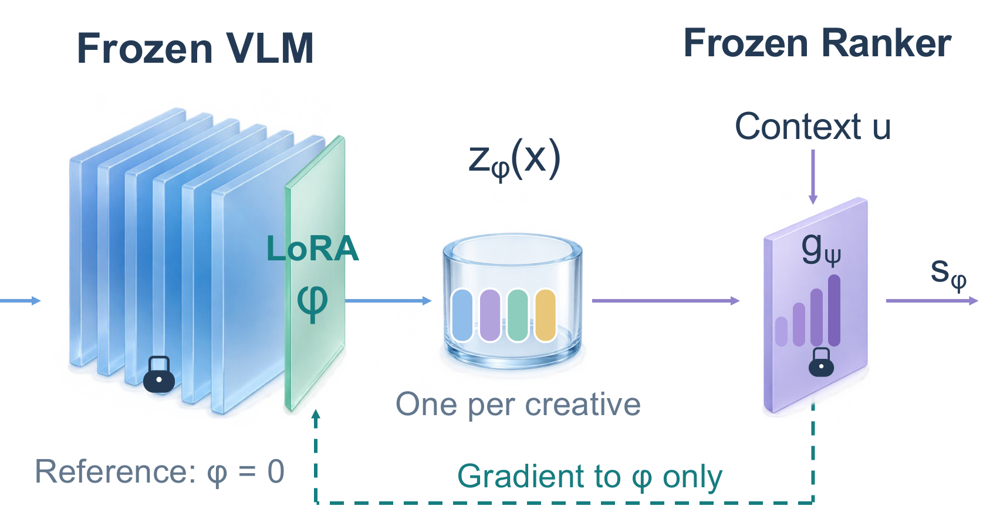

01 NSF FIRE

研究总览：人物、四个研究方向、应用场景
你的反馈：底部真实的火和路体现了 proposal 的核心，很吸引人；上面呈现技术细节。整体多样化、色彩丰富。
来源与原文件
打开原文件
NSF-Proposal-Template-Yue/proposals/awarded/nsf-fire/figure/main_figure.pdf
02 OpenLibSignal ecosystem

生态总览：研究成果、系统资源、三个 aims
你的反馈：树的形式很新奇，别的地方没有见过；喜欢中段的文字和技术细节，以及底部真实图标和 logo 带来的丰富感。
来源与原文件
打开原文件
NSF-Proposal-Template-Yue/proposals/awarded/pose-phase1-openlibsignal/figs/ecosystem-pic-all.pdf
03 OpenLibSignal compact framework

紧凑框架：中央技术与地图、两侧输入和评价
你的反馈：真实世界的地理图很吸引人。
来源与原文件
打开原文件
NSF-Proposal-Template-Yue/proposals/awarded/pose-phase1-openlibsignal/figs/plot.pdf
04 CatchBench · Figure 1

论文总览：三个审计阶段与右侧结果面板
你的反馈：整体图觉得一般，但是喜欢配色。
来源与原文件
打开原文件
internal-writing/papers/iclr-2027-auditablebench/figure/CatchBench-figure1.pdf
05 Cat-DPO · Method overview

方法总览：DPO 对照与 train/adapt 循环
你的反馈：和 No Attacker Needed 一样，卡通风格比较活泼，AI 感不算特别重，中规中矩。
来源与原文件
打开原文件
internal-writing/references/style-exemplars/catdpo/figures/method_overview.pdf
06 No Attacker Needed · Figure 1

问题情境：三个用户与共享状态
你的反馈：与 Cat-DPO 的共同评价：卡通风格比较活泼，AI 感不算特别重，中规中矩。
来源与原文件
打开原文件
https://arxiv.org/html/2604.01350v1/fig_intro.png
07 No Attacker Needed · Figure 2

系统总览：交互、共享状态与读写路径
你的反馈：与 Cat-DPO 的共同评价：卡通风格比较活泼，AI 感不算特别重，中规中矩。
来源与原文件
打开原文件
https://arxiv.org/html/2604.01350v1/fig_main.png
08 When Worlds Change · Spatial reasoning

空间推理：2D / 3D 对照、分层网格与状态变化
你的反馈：喜欢它的 3D 感，而且很规矩、很清楚。
来源与原文件
打开原文件
[NAACL 2027] When Worlds Change: Evaluating Dynamic Spatial Reasoning in LLMs/figures/overview.pdf
09 Memory Retrieval for Changing Preferences

论文图 1：偏好变化时间线与检索对照
你的反馈：喜欢这篇 paper 的图的风格，颜色丰富，AI 感低。
来源与原文件
打开原文件
https://arxiv.org/html/2606.02976v1/demo2.png
10 DORA · Figure 2

地理与数据总览：世界地图、灾害分布、传感器图标与模态表
你的反馈：2026-09-26：10、11 都有吸引人的真实世界的图和 logo，冲击力比较强。
来源与原文件
打开原文件
https://arxiv.org/pdf/2605.11633v1#page=4
11 DORA · Figure 6

标注流程：专家任务设计、确定性轨迹重放与质量控制
你的反馈：2026-09-26：10、11 都有吸引人的真实世界的图和 logo，冲击力比较强。11 除了真实世界的图和 logo，还把技术细节结合上了。
来源与原文件
打开原文件
https://arxiv.org/pdf/2605.11633v1#page=7
12 TDC · Figure 1

平台生态总览：研发生命周期、任务与数据集、工具及评测资源
你的反馈：2026-09-26：这是一个审美很好的大 overview figure，很容易看懂，且不那么单调，最右边还有真实的一个 distribution plot。
来源与原文件
打开原文件
https://arxiv.org/pdf/2102.09548v2#page=4
13 MetaOOD · Figure 1

方法总览：离线元学习与在线模型选择，共享表示和预测器
你的反馈：2026-09-26：优点是技术细节专业，有公式，而且颜色和图案都能 align。
来源与原文件
打开原文件
https://proceedings.iclr.cc/paper_files/paper/2025/file/3a2e5889b4bbef997ddb13b55d5acf77-Paper-Conference.pdf#page=2
14 MemoHarness · Figure 1

双阶段总览：训练期搜索、经验库与测试期逐例适配
你的反馈：2026-09-26：优点是色彩好看，细节丰富，还有公式和三维的图；AI 感比较低，感觉打磨得很好（well polished），我很喜欢。
来源与原文件
打开原文件
https://arxiv.org/pdf/2607.14159v1#page=3
15 FedGNN attacks · Figure 4

威胁分类总览：三类对抗攻击与隐私推断，共享 client/server 图形语言
你的反馈：2026-09-26：色彩我不是很喜欢，太重了；但细节丰富，很专业、很清楚。
来源与原文件
打开原文件
https://papers.ssrn.com/sol3/papers.cfm?abstract_id=7436922
16 Meta SAAC RecSys · Central mechanism

中段技术示意：VLM、LoRA、缓存、冻结 Ranker 与梯度路径；预览为局部裁切
你的反馈：2026-10-17，对 v8c：“这一版我特别喜欢中间的这个示意图，左右还可以。”随后要求把中间正式加入图库；指出“箭头没对齐”，要求修正。
来源与原文件
打开原文件
NSF-Proposal-Template-Yue/proposals/meta-saac-recsys-2027/figure/output/figure1-v8f-final.pdf